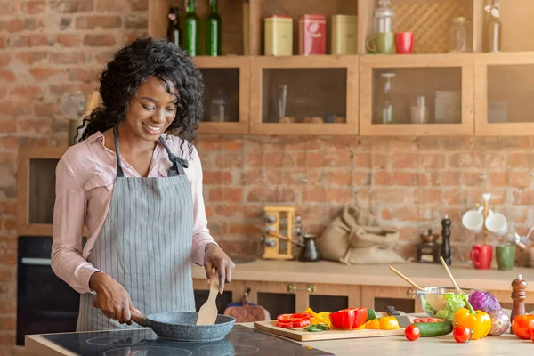

Arepas con perico y queso
Deliciosas arepas con huevo revuelto, tomate, cebolla y queso latino rallado.
Aqui todo es un pequeño experimento. Me encanta crear, probar y reinventar recetas vegetarianas que sean fáciles, divertidas y, sobre todo, deliciosas. Porque comer bien no tiene que ser aburrido. Descubre recetas, nuevos sabores y muchas ideas para disfrutar de la cocina sin complicaciones.

Deliciosas arepas con huevo revuelto, tomate, cebolla y queso latino rallado.
Un snack sencillo y delicioso. ¡Definitivamente te va a encantar!
Si eres fan del maíz, esta receta te va a obsesionar: crujientes por fuera, jugosos por dentro.
Porque comer plantas puede ser mucho más divertido de lo que parece. Más sabores, más creatividad, más conciencia y mil formas de transformar algo tan simple como un tomate